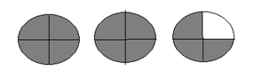
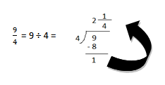
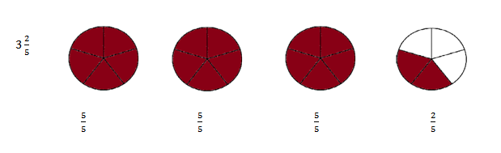
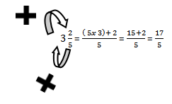

Explore and Discover!
Explore and Discover!

Beng will serve bibingka 9/4 to her friends.
How many whole bibingka and fractional part of a bibingka does she have?
Notice that there are 2 whole bibingka and 1/4 of a bibingka.
You need to change 9/4 to a mixed number.
How do you change a mixed number to an improper fraction?
Look at the sample:
There are in 17/5 all.
By computation,
 Let's Practice!Change the fraction to a mixed number or vice-versa.
31/4 = 13/4
23/5 = 13/5
42/3 = 14/3
64/5 = 34/5
13/2 = 61/2